Kaffeebibliothek
Deine Kaffees wie eine Bibliothek, und eine Espressomaschine, die mitdenkt. Die App liest neue Kaffees selbst aus, holt jeden Mahlvorgang von der Mühle und jeden Shot von der Maschine und sagt dir, wo der Mahlgrad für den nächsten Shot hin muss. Mit Begründung, in Mikrometern.
- Ein Container
- SQLite
- Kein Konto, kein Tracking
- Mahlkönig E64 WS
- Decent DE1
- Home Assistant
- Dark Mode
- Automatisch freigestellt
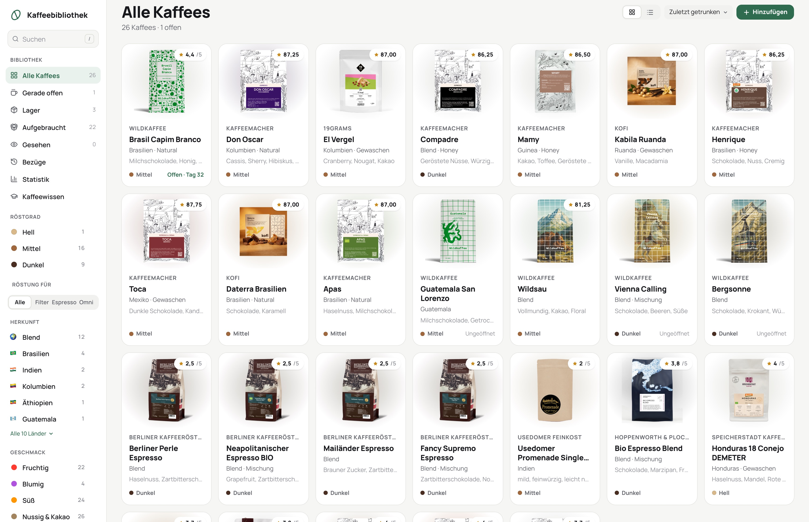
Ein Kaffee ist in Sekunden drin
Shop-Link, Name oder Foto der Packung reicht. Die Anthropic-API sucht im Netz, liest die Seiten und füllt Herkunft, Varietät, Aufbereitung, Höhe, Röstgrad, Aromen und Preis. Du siehst live, welche Seite gerade gelesen wird und welches Feld schon steht.
Das Packungsbild wird automatisch ausgerichtet und freigestellt, damit das Regal aussieht wie ein Regal. Röstereien werden über Schreibweisen hinweg zusammengeführt. Ohne API-Key geht alles von Hand.

Weiterstöbern, während er liest
Das Auslesen läuft als Auftrag im Server. Du kannst die Seite verlassen, neu laden oder das Handy sperren: Unten rechts siehst du, woran er gerade arbeitet, und eine Meldung sagt dir, wann er fertig ist. Ein Klick auf „Prüfen“ öffnet den fertigen Entwurf.
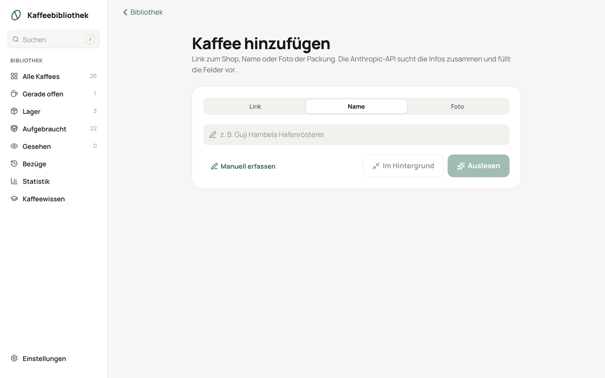
Rät nicht, rechnet
Für eine neue Tüte gibt es einen Startwert auf der Skala deiner Mühle: feste Regeln für Röstgrad, Filter oder Espresso, Höhe, Aufbereitung, Decaf und Röstalter, plus das, was die App aus deinen eigenen Tüten gelernt hat.
- Lernt lokal: Ridge-Regression über deine Tüten, Kreuzvalidierung Tüte für Tüte, keine Cloud
- Folgt jedem Shot: Zeit aufs Zielverhältnis umgerechnet und über die gelernte Steigung in µm übersetzt
- Schmeckt mit: sauer oder bitter verschiebt den Wert je Kaffee, gebremst
- Nachvollziehbar: Der Kompass-Pfad zeigt jeden Beitrag einzeln
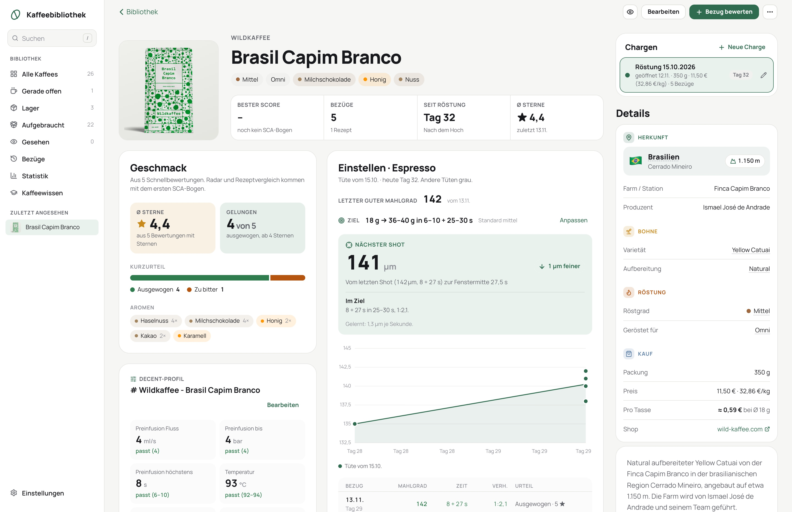
Du sagst nur noch, wie er war
- Mahlkönig E64 WS: Mahlvorgänge direkt aus der Weboberfläche der Mühle im Heimnetz, nur lesend. Optional über Mahlkönig Sync
- Decent DE1: Plugin für die de1app schickt jeden Shot mit Druck-, Fluss- und Gewichtskurve, dazu das ganze Archiv
- Profil je Kaffee: Preinfusion, Temperatur und Stopp-Gewicht passend zum Ziel, abgeglichen mit dem Tablet. Vorhandene Profile bleiben unberührt
- Home Assistant: Temperatur, Wasser und Zustand live, Maschine und Dampf schaltbar
Optimiert für Decent und Mahlkönig, offen für mehr: Jede Maschine und jede Mühle, die ihre Shots oder Mahlvorgänge hergibt, lässt sich anbinden. Du hast so ein Gerät? Mach ein Issue auf.
Mahlvorgang und Shot werden über die Zeit gepaart. Der Dialog zeigt Verhältnis, Zeit, Preinfusion und den nächsten Mahlgrad groß, gegen dein Zielfenster.

So ausführlich, wie du Lust hast
Schnell mit Kurzurteil („zu sauer“, „ausgewogen“) und Sternen, oder voll nach dem SCA-Cupping-Bogen mit Aromarad. Beides zählt getrennt, damit Sterne keine Scores verwässern.

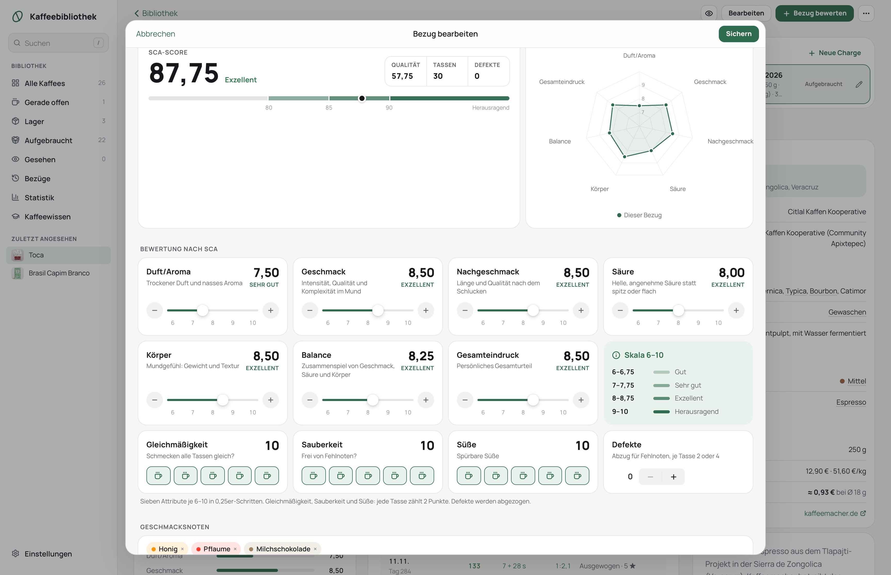
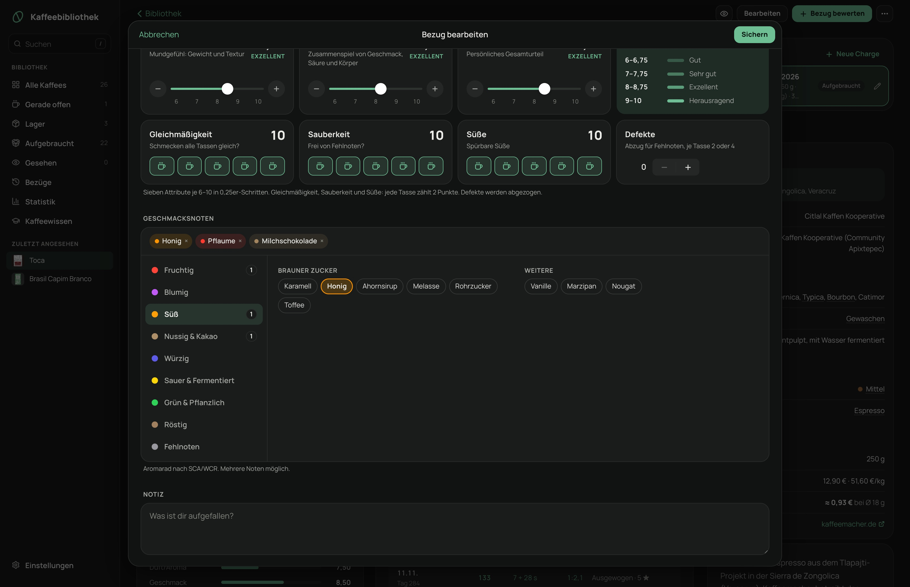
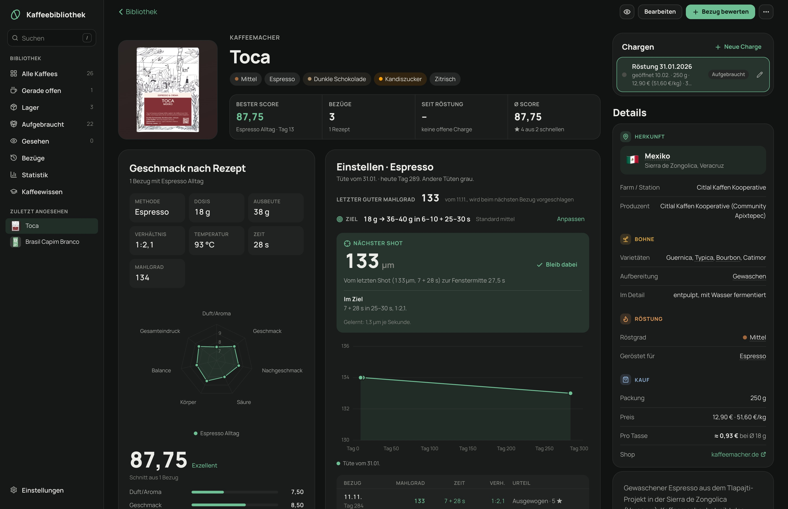
Sieht nachts genauso gut aus
Der Dark Mode folgt dem System, jede Seite ist für beide Modi gebaut, von 390 bis 1728 px.
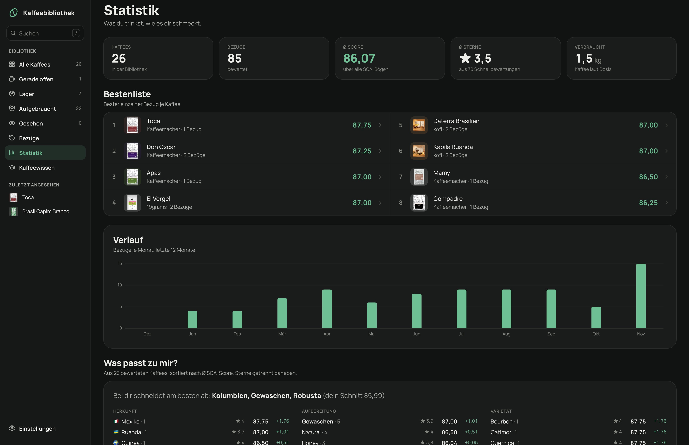

Technik, die man nicht sieht
Automatisch freigestellt
Hintergrundfarbe aus dem Bildrand, Flutfüllung von außen, Schatten werden halbtransparent statt hart abgeschnitten. Helle Tüten ohne Kontur bleiben ganz.
Automatisch ausgerichtet
Die Packung wird als Umriss gefunden und auf ein Quadrat mit festen Rändern gesetzt. Jede Tüte steht gleich groß im Regal.
Live-Auslesen
Die Antwort der Anthropic-API kommt als NDJSON-Stream: Websuche, gelesene Seiten und halbfertige Felder erscheinen sofort.
Ridge-Regression
Der Kompass lernt nur die Abweichung von festen Regeln, λ per Leave-one-bag-out. Die erste Tüte ist schon brauchbar.
Hopper-Alterung
Die Steigung µm je Sekunde wird aus Shots derselben Tüte nachgeschärft, die Tage seit dem ersten Shot gehen mit ein.
Paarung über die Zeit
Shot und Mahlvorgang finden sich über die Uhrzeit, mit Toleranz für abweichende Uhren. Eins wählen, das andere kommt mit.
Mühlen-Datenbank
Die E64 WS liefert ihre SQLite-DB über die Weboberfläche. Spülen, Leerlauf und Vormahlen fallen weg, an der Mühle wird nichts geändert.
Decent-Plugin in Tcl
Shots, Archiv und Profile in beide Richtungen, das Altformat wird im Server zerlegt. Vorhandene Profile bleiben unberührt.
Stimmige Sicherung
ZIP aus eigenem Code, die Datenbank per VACUUM INTO im laufenden Betrieb. SQLite über node:sqlite, ohne native Abhängigkeit.
Lager, Bezüge, Statistik


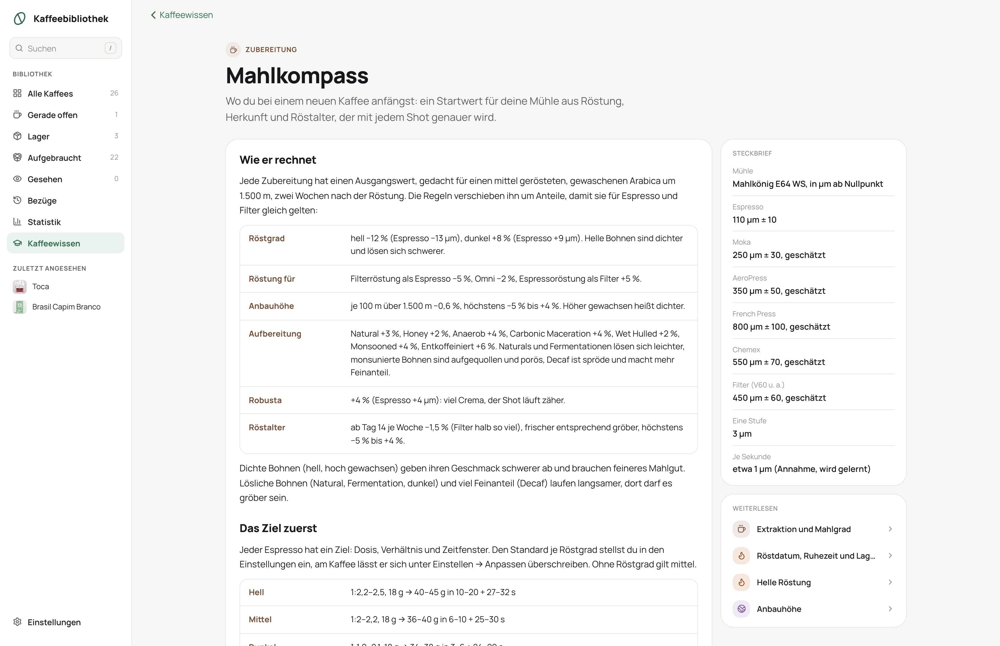
Durchdacht bis ins Detail
SCA-Bogen oder schnell
Kurzurteil und Sterne für jeden Tag, der volle Cupping-Bogen mit Aromarad, wenn es zählt. Beides getrennt ausgewertet.
Chargen statt Restmengen
Jede Tüte mit Röstdatum und Status. Kein Abwiegen, keine Buchhaltung.
Was passt zu mir?
Profil aus deinen Bewertungen, auf Wunsch sucht die Anthropic-API bei deinen Röstereien nach Neuem.
Erste Schritte
Ein Assistent geht beim ersten Start alle Einstellungen durch: Pflicht, Optional, Empfohlen.
Sicherung
ZIP mit Datenbank und Bildern auf Knopfdruck und jede Nacht, mit einstellbarer Aufbewahrung.
Überall zu Hause
Installierbar auf Handy und Desktop, Dark Mode nach System, gebaut von 390 bis 1728 px.
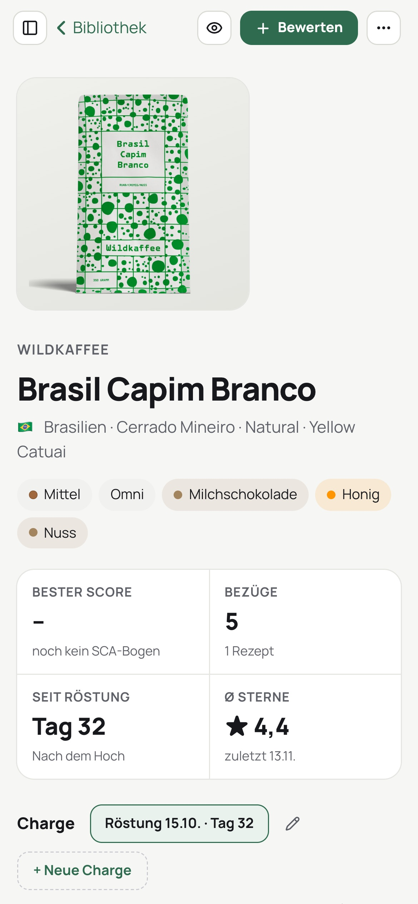
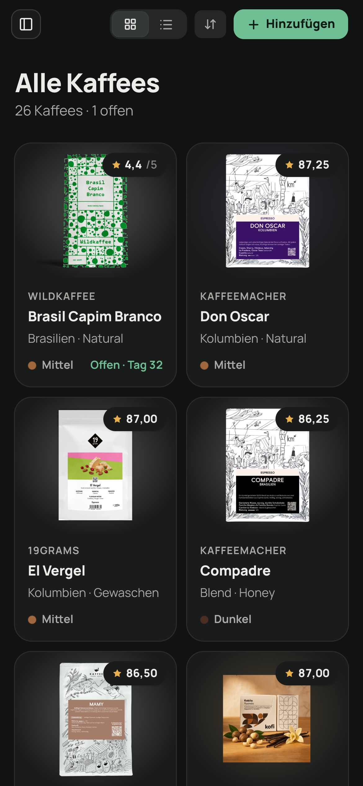
Deine Daten bleiben bei dir
Ein Container, eine SQLite-Datei, ein Bilderordner. Kein Konto, kein Tracking. Nach außen geht nur, was du einschaltest: die Anthropic-API zum Auslesen und optional Mahlkönig Sync.
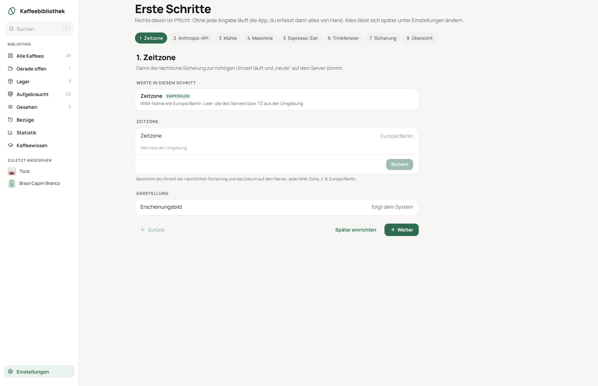
In 2 Minuten laufen lassen
git clone https://github.com/Yatheria030/kaffeebibliothek.git cd kaffeebibliothek docker compose up -d --build
Dann http://localhost:8790 öffnen. Ohne Docker: npm ci && npm run build && npm start mit Node 24.
Alles Weitere steht in der README (auf Deutsch).